Создана для эффективной работы, программирования и творчества.
БЕЗ ПРОВОДОВ
Беспроводная мышь MX Master 3 работает без проводов до нескольких месяцев. Вы закроете приоритетные задачи прежде, чем понадобится подзарядка.
70 ДНЕЙ
ЗА ЛЮБЫМ СТОЛОМ
Исследуйте ландшафты своего дома, не отвлекаясь от работы. MX Master 3 достаточно компактная, чтобы сменить рабочее место и перенестись с ноутбуком на кухню.
В 5 раз
точнее предшественников
4 000
точек на дюйм чувствительность датчика
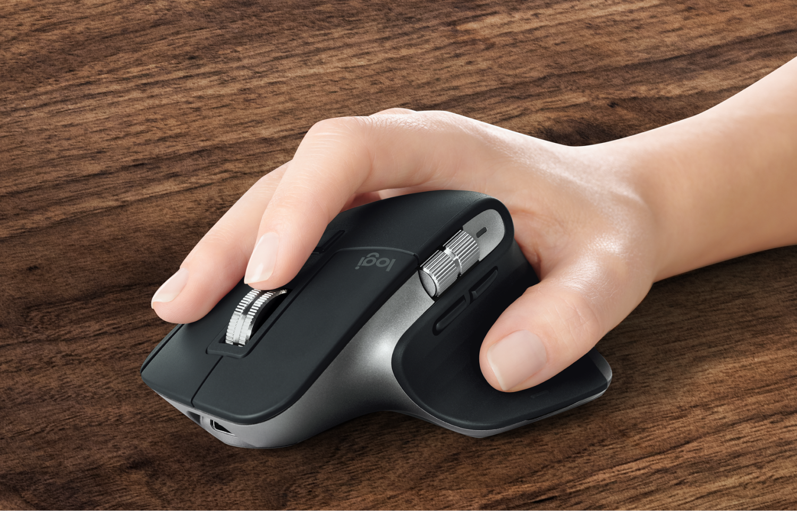
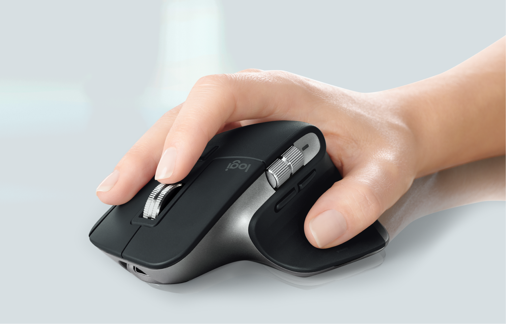
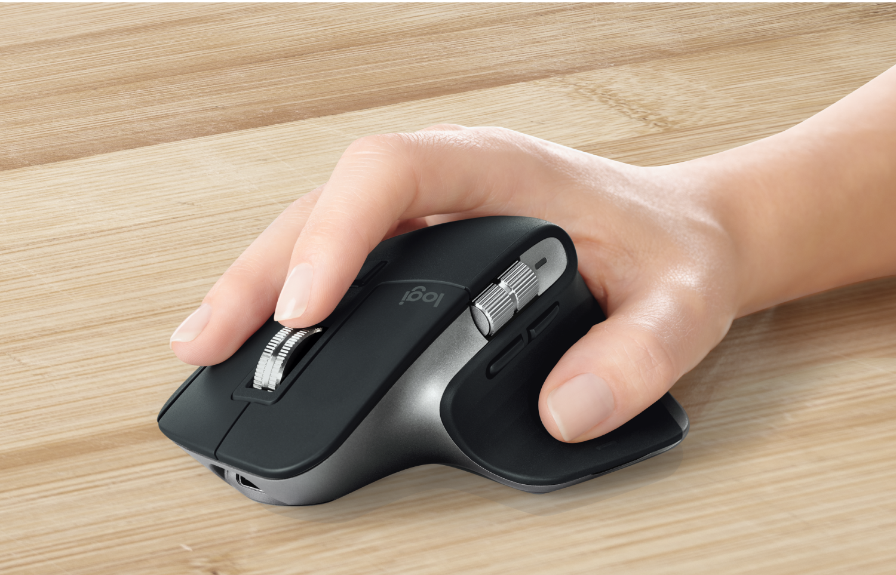
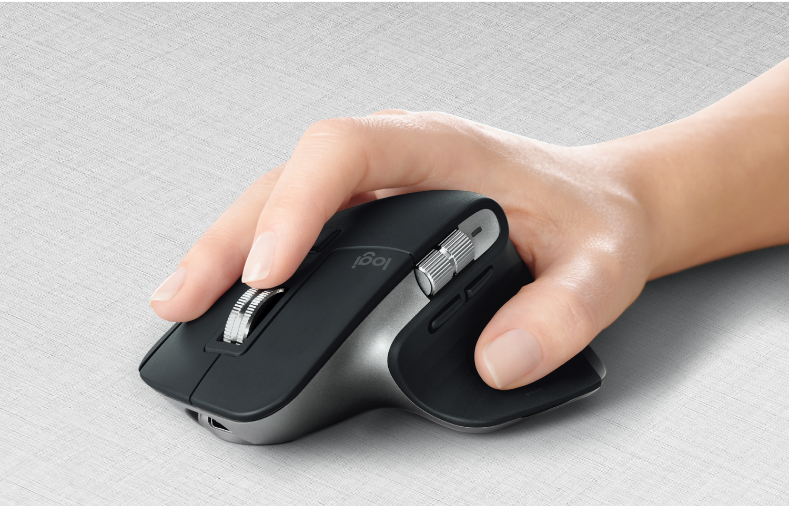
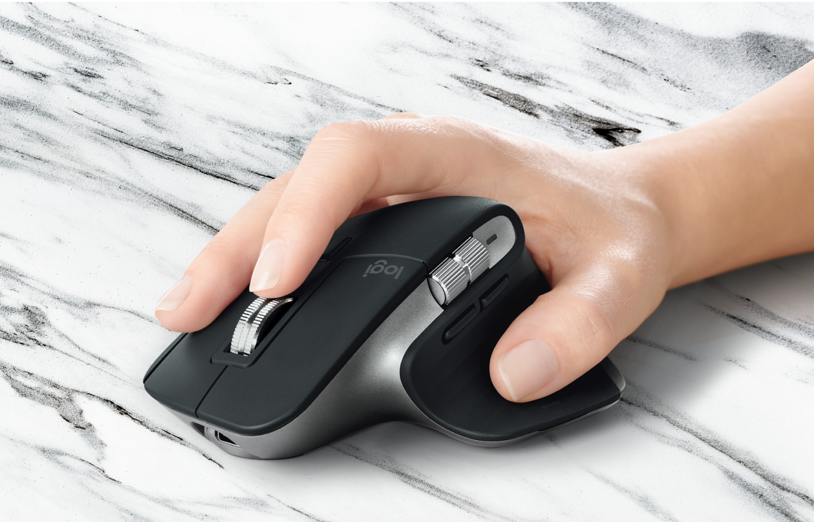
Переключите поверхность
Благодаря технологии Logitecch Darkfierd, MX Master 3 работает на любой поверхности, даже на стекле.
ОДНОВРЕМЕННО С НЕСКОЛЬКИХ УСТРОЙСТВ
С технологией Flow вы сможете работать одновременно на нескольких компьютерах, мгновенно переключаясь между разными операционными системами — даже между Windows® и macOS. Например, достаточно скопировать текст, изображение или файл на MacBook и переместить его на Windows PC без задержек.
Клавиатура MX Keys отслеживает перемещение курсора мыши MX Master 3, благодаря чему ваш текст появится там, где вы работаете в текущий момент.
Нажмите и удерживайте папку, чтобы переместить её
Перенесите папку на любой из соседних экранов
Да, всё так просто!
С ИНДИВИДУАЛЬНЫМИ НАСТРОЙКАМИ
Мышь MX Master 3 адаптируется под ваши рабочие процессы. Благодаря индивидуальным настройкам, вы сможете настроить кнопки и жесты практически под любое используемое приложение.
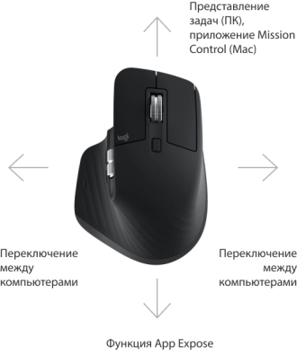
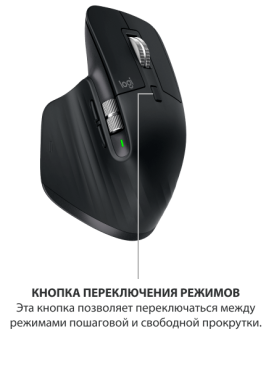
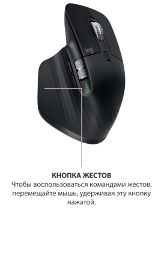
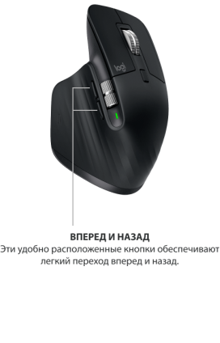
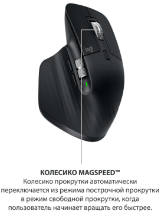
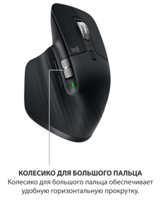
Начните работать продуктивнее с момента покупки — устройство предварительно оптимизировано под популярные приложения на Windows и Mac.
КОМФОРТНО. ЭРГОНОМИЧНО. ИНТУИТИВНО.
Дизайн мыши MX Master 3 разработан так, чтобы с точностью повторять форму вашей ладони. Но не менее важны колесико прокрутки для большого пальца и расположение кнопок жестов, с которыми вы будете творить уверенно как никогда.
БЫСТРЕЕ, ЧЕМ КОГДА-ЛИБО
Компьютерная мышь MX Master 3 предлагает ультимативный механизм прокрутки со скоростью 1000 строк за 1 секунду. С точностью до пикселя. Бесшумно.